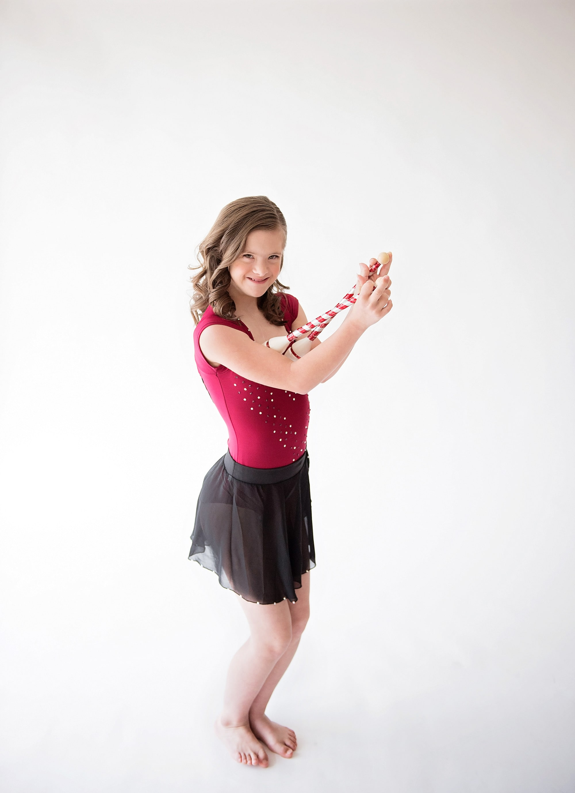

Erin
America Down syndromeI am Erin.
I love to dance, ride horses, and do rhythmic gymnastics. I love math, science, and history. I like studying about Abraham Lincoln because he fought for people's rights like I do. My life is so fun. I am an Assistant Teacher at my dance studio.
Down syndrome is just a part of me like my brown eyes. It doesn't mean I can't have friends or go to school or have a job. I can do anything! I AM Able!
Get involved Back to all stories